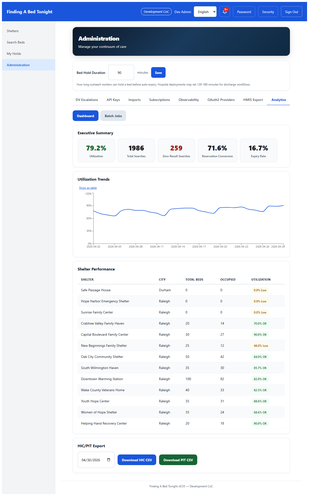
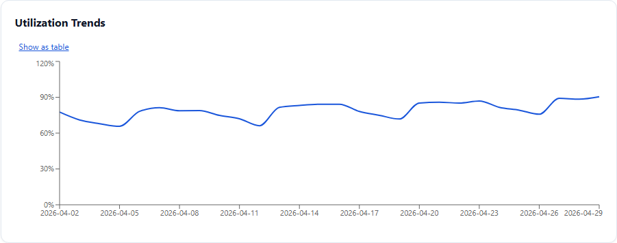
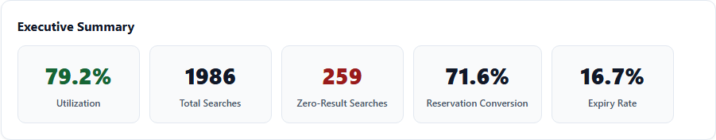
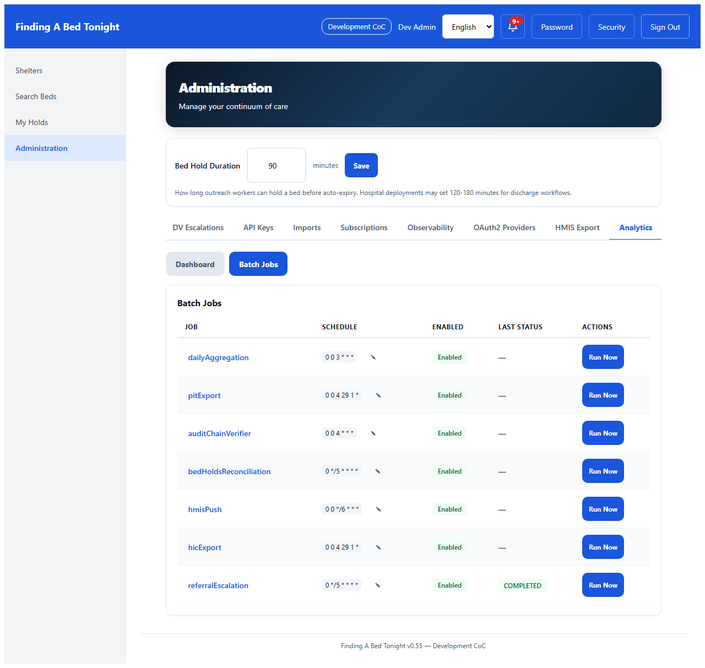
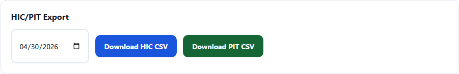
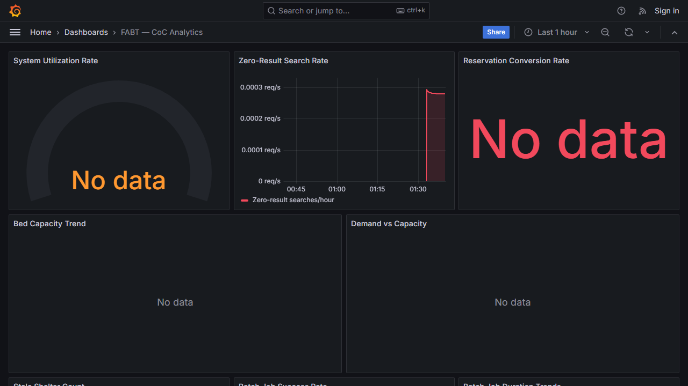

What This Shows
CoC administrators can analyze utilization trends, track unmet demand through zero-result bed searches, generate HIC/PIT exports for HUD, and manage Spring Batch jobs — all without client PII. DV shelter data is aggregated with small-cell suppression (minimum 3 shelters, 5 beds). Analytics queries run on a separate connection pool so OLTP bed search performance is never impacted.
The CoC administrator opens the analytics dashboard Monday morning. One glance tells her: system utilization is climbing toward 80%, hundreds of bed searches returned zero results this month, and reservation conversion is trending upward. The numbers that used to take a week to compile are updated every night.

She drills into the trend line — utilization has been climbing steadily for two weeks. That's the data she needs for Thursday's board meeting to request additional capacity.

Zero-result searches tell the story the numbers can't. Every zero is a moment when an outreach worker searched for a bed and found nothing — someone the system couldn't help. That's the strongest signal for where to invest next.

Spring Batch Job Management
Behind the scenes, batch jobs aggregate the data every night — daily summaries, HMIS pushes, HIC/PIT exports. The administrator can see what ran, what failed, and restart anything that needs attention.

HUD Reporting
HUD reporting season used to mean weeks of spreadsheet wrangling. Now the administrator clicks one button and downloads HIC/PIT data in HUD-compatible CSV — DV shelters automatically aggregated to protect individual shelter identity.

Operational Monitoring
For operations teams — utilization gauges, zero-result search rate, batch job health, and demand-vs-capacity overlays. The dashboard that answers "is the system working?" at a glance.

Privacy & Compliance
All analytics are aggregate — no client PII. DV shelter data uses dual-threshold suppression: aggregate is only shown when 3+ distinct DV shelters AND 5+ beds exist, preventing re-identification of individual shelters. Geographic view excludes DV shelters entirely. Analytics queries run on a separate HikariCP connection pool (3 connections, read-only, 30s timeout) so they can never starve OLTP bed search queries.